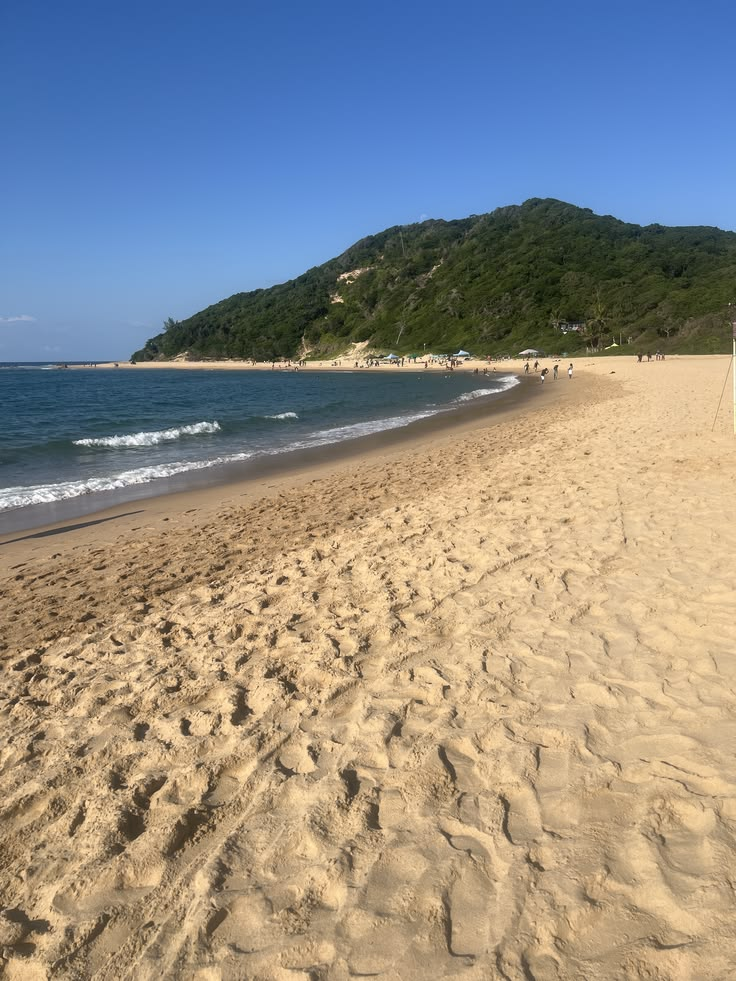

Turismo
Há mais num destino do que um lugar no mapa.
Apoiamos o planeamento de experiências que respeitam o seu ritmo e valorizam a cultura, a paisagem e a identidade local.
- Planeamento personalizadoRoteiros ajustados aos seus interesses e à forma como viaja.
- Experiências e descobertaUma seleção atenta à cultura e ao contexto de cada destino.
- Articulação e acompanhamentoApoio à organização para desfrutar com maior tranquilidade.